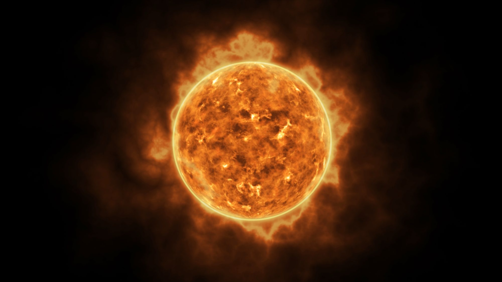

Pocetna | O temi | Galerija | Mapa slike

Sunce sadrzi 99,86% ukupne mase Suncevog sistema. To je zvezda u kojoj se vodonik spaja u helijum, a pri tome se oslobadja ogromna kolicina energije. Svetlost sa Sunca do Zemlje putuje oko osam minuta.
Gravitacija Sunca drzi sve planete na njihovim putanjama. Planete se krecu oko Sunca u istom smeru i priblizno u istoj ravni.
Planete se dele u dve grupe:
Saturn je poznat po prstenovima od leda i stena. Jupiter je najveca planeta, a u njemu bi stalo vise od hiljadu Zemalja.
Svi mi zivimo na maloj plavoj tacki u prostranom Suncevom sistemu.
| Planeta | Precnik (km) | Udaljenost od Sunca (mil. km) | Godina traje |
|---|---|---|---|
| Merkur | 4.879 | 58 | 88 dana |
| Venera | 12.104 | 108 | 225 dana |
| Zemlja | 12.742 | 150 | 365 dana |
| Mars | 6.779 | 228 | 687 dana |
| Jupiter | 139.820 | 778 | 12 godina |
| Saturn | 116.460 | 1.434 | 29 godina |
| Uran | 50.724 | 2.871 | 84 godine |
| Neptun | 49.244 | 4.495 | 165 godina |
Vise o planetama mozete procitati na NASA stranici o Suncevom sistemu. Slike planeta pogledajte u galeriji.